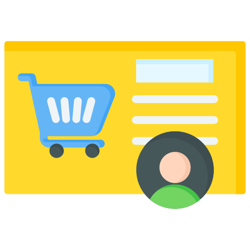

Welcome to AgroChain
A decentralized platform connecting farmers and consumers directly.
At AgroChain, we aim to revolutionize the agricultural supply chain by providing a transparent and efficient platform for all stakeholders. Our mission is to empower farmers by giving them direct access to the market, reducing middlemen, and ensuring fair prices for their produce.
Key Features

Empowering Farmers
Empowering farmers with direct market access, eliminating middlemen, and ensuring fair prices.

Secure Transactions
Blockchain-based system ensuring transparency and security.

Convenience for Buyers
Providing buyers with access to locally sourced produce at competitive prices directly from farmers.

Sustainability
Promoting sustainable farming practices and eco-friendly solutions.